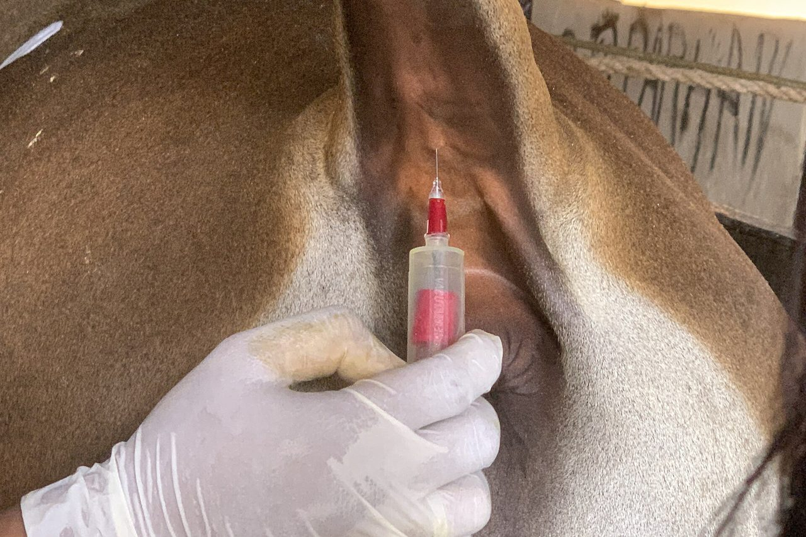

Packaging and Shipping Your Samples
Follow these steps to get your blood or ear notch samples to our lab safely and quickly.
Steps
How to pack your shipment
- Label all blood tubes and ear notch vials clearly with the animal ID, making certain caps fit securely.
- Place blood tubes and ear notch vials in air-tight, heavy-duty zip-lock bag(s).
- Place the bag of samples into the shipping box and surround it with ample packing material to prevent breakage during shipping.
- Place the completed submission form and payment in their own zip-lock bag inside the box. Not sure which form? See Which form do I need? below.
- Ear notches and BVD blood samples only: add frozen ice packs, and ship so the box reaches the lab within 48 hours of sampling.
- Use proper shipping labels (we can provide them) and write "BOVINE BLOOD and/or TISSUE SAMPLES" on the outside of the box (for goats or sheep, "CAPRINE" or "OVINE" in place of "BOVINE").
- Ship samples via Priority Mail, FedEx or UPS so they reach our laboratory no later than Wednesday.

Ear notches and BVD samples ship cold
BVD PI testing is for cattle and bison. Pregnancy blood tubes do not need ice. Ear notches and BVD blood samples do: refrigerate them before shipping, pack them with ice packs, and get them to the lab within 48 hours of collection. If a shipment cannot make it in 48 hours, call first for instructions.
Plan it
Ship-by planner
Samples that reach the lab by Wednesday are reported that Thursday. Pick a ship day to see which Thursday you get.
Which form
Which form do I need?
Three forms cover everything: cattle and bison pregnancy, small ruminant pregnancy, and BVD PI. They are all below.
Address
Ship to
Advanced Dairy Diagnostics & Consulting, LLC
362 310th Avenue
Frederic, WI 54837

Forms
Test forms
Download and complete the form that matches your samples, then include it in your shipment.
Supplies
Supplies we can ship you
If you do not keep sampling supplies on hand, order them on the submission form and we ship them with your first order. Prices are printed on each form. Tick what you already have and print the rest.
Untick anything you still need to gather and it is listed here.
Learn how you can adopt this and other technologies to increase your herd's profitability through improved reproductive management. Call us at (715) 653-2201 or email us for more information.